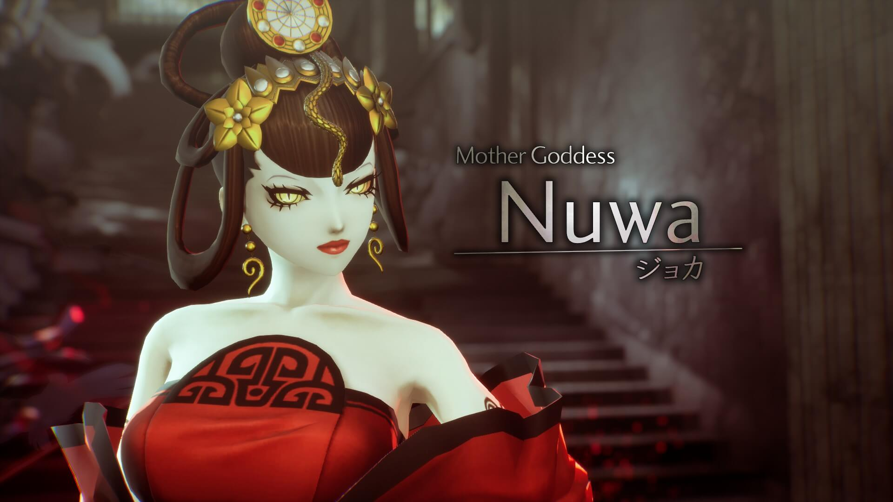

Gallery



Here are some various screenshots I took of my ongoing playthrough of the game.
Shin Megami Tensei V: Vengeance, or SMTVV for short, is a Japanese Role Playing Game developed by Atlus. Releasing on June 14, 2024, it's a turn-based RPG focused on with features of recruiting demons for your team, free roam,. It's set in modern day Tokyo, with an alternate post-apocalyptic world called Da'at.
SMT5 is a game I've been waiting to get a Steam port ever since the game came out in 2021, and finally this year, I can play it. So far I've been enjoying the game a lot, from the gameplay to the music to the story and to the graphics. I don't think I've enjoyed a single player game this much in a very long time as well; though it sucks that SMTVV released just around when Term 2 was getting more busy. I'll get back on the grind after this term ends.
Here are some various screenshots I took of my ongoing playthrough of the game.
The SMT series is known for its rock-esque music, but starting with SMT:IV and onwards, the music has used more synth, and personally, SMT:V has a really good soundtrack, and one of my top video game soundtracks. Here's some of my personal favorites.
Battle- Da'at
World of Shadows
Battle -Droll-
Da'at: Konan
Battle- Da'at: Vengeance
Battle -"Vengeance" for reclamation-
All of these can be found on Spotify. If you like fast bpm songs with guitar and synth, SMTVV has it.